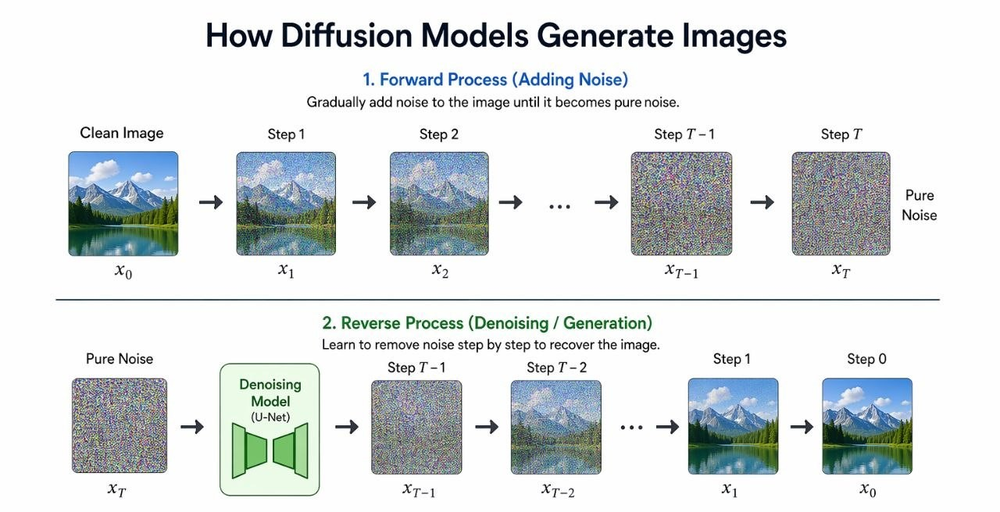

AI Output Gallery
Examples of processed and generated multimedia.

How generative artificial intelligence systems work

We explore and harness the power of Generative AI to revolutionize images, audio, and video production.
View AI GalleryThese tools primarily use a process called Diffusion. Imagine starting with a canvas of pure digital static (noise) and then slowly refining it, pixel by pixel, until a clear image emerges. The AI uses your text prompt as a guide to "de-noise" the static into a brand-new, original visual.
AI voice tools function through Neural Speech Synthesis. The system breaks down text into phonetic units and analyzes the emotional context. By training on thousands of hours of speech, the AI stitches these patterns together to create a fluid, natural-sounding voice.
Video AI combines image generation with Temporal Consistency—the logic of how things move over time. The model treats a video like a series of interconnected frames in a 3D space. It predicts how light, gravity, and objects should behave from one second to the next.
They work in two steps: 1. Add noise: A clean image is gradually turned into random noise. 2. Remove noise: The model learns to reverse this process, starting from noise and rebuilding a clear image step by step. Result: The model creates realistic images by turning noise into structure.

Examples of processed and generated multimedia.